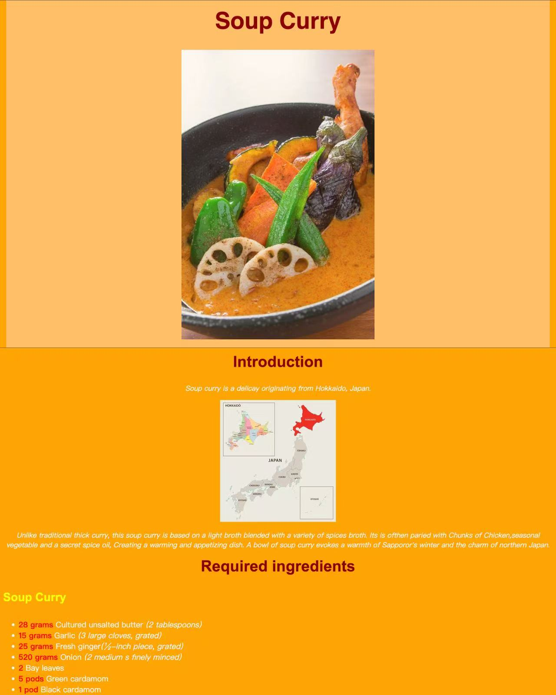
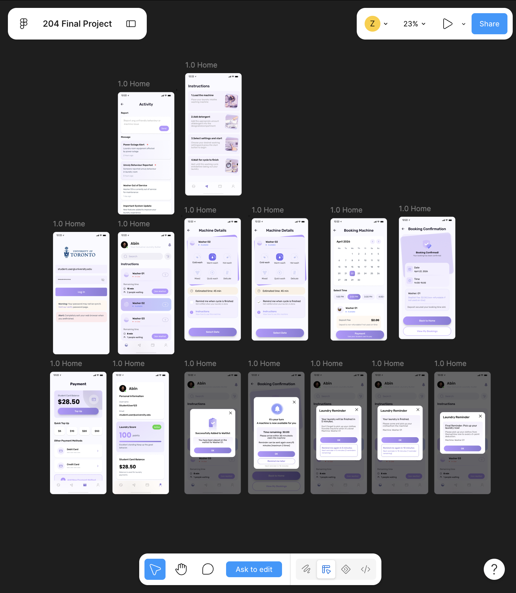
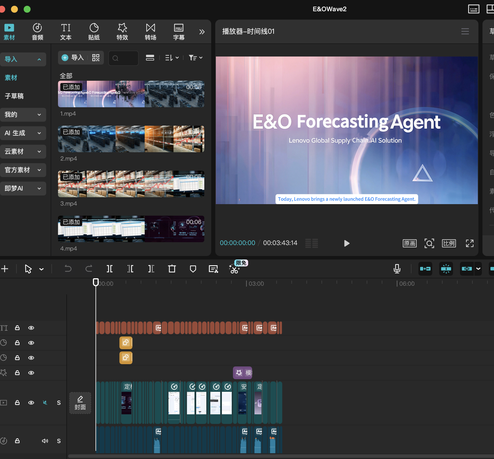

ZIQI LIN Profile
My name is ZIQI LIN. I am a Digital Enterprise Management Student. This is my third year live in Canada. I am interested in website design and I enjoy turning creative ideas into useful digital experiences. This profile introduces three of my projects.
Project 1
Website Design: Recipe

I created this recipe website for CCT 260 website design. In this case, I introduced the soup curry from Japan. Through this project, I learned how to modulized the content, such as header, introducetion, cooking steps, and make link.
Project 2
Figma Design interface: School Laundry APP

School Laundry APP is my project during the CCT 204 Design. In this course, I learned how to use Figma in the process of design the APP's interface. Also I knew some logic of the user's experience and user's interface. That would help me to stdanding a view from the users.
Project 3
Video production

During my summer internship, I created videos introducing an internal Copilot tool. Through this experience, I learned how to attract viewers' attention and explain information clearly through video. These skills will support my future design work.